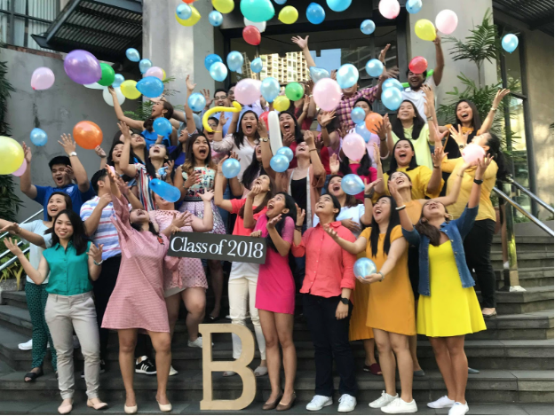

The hallways on the third floor of the Ateneo Professional Schools building in the Rockwell campus. Many law classes take place behind these doors.
To many, the scene is familiar, and the feeling most of all: saying goodbye to the brick-lined hallways of the Ateneo Professional Schools building tucked away into the heart of Makati. Dinners with friends at the nearby mall, all-nighters in coffee shops, study sessions in the library soon become a distant memory.
Happiness swirls within Joby and Kristine’s minds. The two young women are set to walk across the stage of the Meralco Theater on Sunday, July 15, ready to receive their Juris Doctor degrees.
--
Only a few years ago, both of them were fresh out of college, entering law school for the first time. Was this always their anticipated life path?
For Kristine Sonon, it was almost second nature. “To be a lawyer is my childhood dream. I got fascinated with women lawyers when I watched tv shows and movies. I found them sophisticated and brave. It’s also my parents’ dream for me. When I grew up people, especially my relatives, knew that I’d take up law someday.”
For Jo Beatriz Guerrero—Joby, as friends and family call her—not so much. “I actually wanted to be a doctor ever since I was young,” she says.
As fate would have it, they both ended up at the Ateneo Law School (ALS)—and as scholars, no less. Joby, a recipient of the Gabriel Singson Trust Fund Scholarship, shares that being the eldest of four siblings, she wanted to ease the financial burden of law studies on her parents. She looked for available scholarships and did her very best to maintain the grade requirement. The same can be said for Kristine, herself a recipient of the St. Thomas More Scholarship Award in her second and third year, and the Roberto "Bobby" Arevalo Gana Foundation Inc. Scholarship for her fourth year.
“It was in my second year that I got accepted in my first scholarship grant,” she says. “I applied in the school’s Registrar’s Office which processed the scholarship applications.”
Joby (left) poses with a congratulatory sign from her block after her Juris Doctor Thesis defense; Kristine (right) in her graduation photo. Photos courtesy of Joby Guerrero and Kristine Sonon
With a scholarship locked in place, all they had to do next was to excel.
And excel they did.
They’re graduating with Second Honors in a batch of almost two hundred students while having successfully balanced their personal lives with their extracurriculars. Both are members of the ALS Choir, and Joby is also a volunteer of the Campus Ministry Office. When asked to describe their study habits in law school, both girls highlighted the importance of taking a breather in the middle of the stress and pressure that comes with the law school environment.
“Truth be told, I’m really a serious student,” shares Joby. “Study time is really study time. I have a schedule for the day and I do my best to follow that schedule. But I make sure to have time with my family and friends inside and outside school. I also exercise. I do Zumba or jog every time that I can.”Block B 2018 with Dean Jose Maria Hofileña and Atty. Ronald Chua. Photo courtesy of Joby Guerrero
Kristine also says that she was very diligent in her studies. “I tried to finish all the readings and the requirements but I also found time to live a life outside law school.”
Four years of studying will surely not have a dearth of life-changing learning experiences. This can come in the form of big, grand moments, but also the little, everyday ones. Joby shares that what has ultimately shaped her is the rigor of the daily grind of law school.
“Preparing for recitations and answering the Bar-type examinations plus balancing personal issues that I faced trained me how to manage my time well. I learned that amidst our busy schedules, life can surprise us with anything so we should be flexible and just be positive in the things we need to do.”
For Kristine, it’s quite the opposite. While she admits that it’s hard to separate experiences in law school, she picks out a memory: “Maybe what was unforgettable was when I had an elective where we had to visit jails because that showed me the reality and the faces behind the law we study.”
Members of the Ateneo Law School Choir Sy 2017-2018. Joby is seen fourth from left and Kristine, third from right. Photo courtesy of Joby Guerrero
The school’s impact on them is also undeniable and instrumental to their growths as humans and as future lawyers.
“ALS really embodies the Ignatian Spirituality teaching that we should be men and women for others—specifically, lawyers for others,” Joby articulates. “Ignatian spirituality and the rigors of the law school really influenced me to think not only about myself but also to think about the people behind the cases. The cases are not just names; these are real people and there are lives involved. ALS taught me to be more empathic of not only my client but also of the other party, the other lawyer, the judge and everyone part of the case. Because each one is a person with human dignity which is and should be protected by our laws.”
Kristine echoes similar sentiments: “ALS taught me tenacity, confidence, and compassion to others. In law school, you don’t have the luxury of time grieving over past bad recitations and exam results. I learned how to accept bad results and just get up and study more to perform better,” she says. “I became more compassionate to others especially those in prisons. With our interactions with them, I had a glimpse of how cruel the society is towards these people. Life is already hard for them while in jails, but even if they get out, it’s still hard because of how the society deprives them of the opportunity to live a normal life.”
As they prepare to leave the law school, they look back at what’s been most memorable for them. Joby says it’s hard to choose just one; nevertheless, a memory comes to mind.
“I think my favorite, even though it was one of the hardest periods of my life, was the time I was preparing for the JD thesis defense. I felt loved and cherished by family and friends since everyone was willing to help. The thesis ordeal was such an overwhelming thing to experience but through the support of family, friends and blockmates, I was able to overcome that hurdle.” She gives a special shoutout to her beloved block that had stood by her all throughout law school: Block B 2018, of which Kristine is also a member.
Joby and Kristine’s block, Block B, at the steps of the APS Building. Photo courtesy of Joby Guerrero
For Kristine, there is nothing specific, but rather, overarching: “There is no particular event,” she says, “but the different funny moments that the class had during recitations, especially the bloopers, were memorable.”
Looking ahead, Joby and Kristine court with the idea of taking up further studies. Kristine wants to work in a law firm; Joby’s dream is to be part of the country’s Foreign Service delegation. “It’s said to be the hardest government exam or recruitment process in the country,” she says. “But hopefully I’ll reach this dream of representing our country in another part of the world.”
It’s a tough world out there, and both Joby and Kristine are aware of that. As they close this chapter of their lives and open a new one, they draw strength from their most cherished support system—their families and friends—and hold onto hopeful words, pieces of advice that they will keep close to their heart even as they move on from Ateneo Law School.
“Don’t give up on goodness. Make God proud,” Kristine offers.
“It’s hard to be nice because the world is not nice,” Joby admits. “It’s true, the world can be daunting and it is really scary but if one can be a light, the kindness a person needs for the day, then I believe it’s better to choose this seemingly more challenging path.”
If Joby and Kristine’s characters are any indication of the light and goodness ahead, then there will be more Filipinos helping out uphold the law.